วิธีการวัดลำโพงสำหรับทำ crossover EP 1
Series นี้ผมจะลงวิธีการวัดลำโพงเพื่อจะนำไปทำ crossover โดยเฉพาะ
ผมจะอธิบายขบวนการวิธีอย่างคล่าว ๆ พอให้ลองทำตามกันได้ แต่ก็จะไม่ลงลึกถึงวิธีการ settings และการทำ calibration นะ ถึงถ้าใครติดปัญหาส่วนนั้นก็สามารถ Message มาสอบถามได้
ในตอนที่ 1 จะเกี่ยวกับ อุปกรณ์ที่ใช้ และ เริ่มต้นวัด Impedance
- อุปกรณ์ 1
- Audio Interface
- Omni RTA mic
- DATS v3 / DATS LA
อ้างอิงจากบทความเก่า เลือกตามที่มี
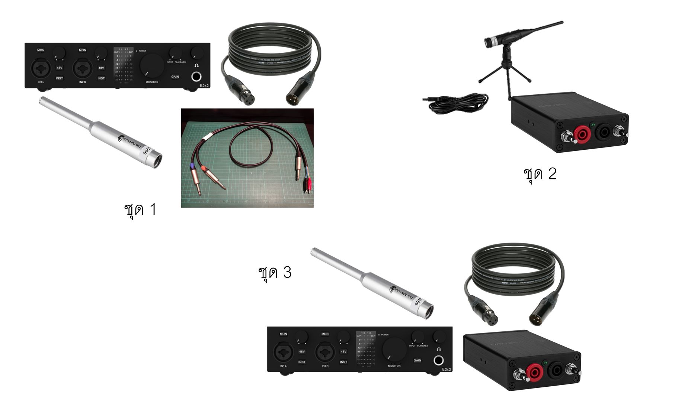
https://www.facebook.com/groups/791461357947350/permalink/1902911593468982/
- อุปกรณ์ 2
- Turn Table
- ไม่จำเป็นแต่ถ้ามีก็จะทำให้วัดได้เร็วขึ้นเยอะ Turn Table ของผมจะมีวางแม่เหล็กที่มุมองศาทุก ๆ 15 องศา ทำให้ไม่ต้องเสียเวลาเล็งหรือต้องค่อย ๆ วัดมุมเหมือนเมื่อก่อน
- โปรแกรม REW
- ผมแนะนำให้ใช้ REW หรือโปรแกรมที่สามารถทำงานได้ใกล้เคียง
- ไม่แนะนำโปรแกรมวัด RTA เช่น Smaart หรือ Open Sound Meter เพราะจะทำบางอย่างไม่ได้
- สถานที่วัด
- ไม่จำเป็นต้องใหญ่มาก เพดานสูง 3 เมตรขึ้นไป ความกว้างความยาวมากกว่า 3 - 4 เมตร
- เสียงก้องของห้องไม่มีผลต่อการวัด การวัดแบบนี้สามารถใช้กับห้องที่มีเสียงก้องได้
- แต่เสียงในห้องต้องเงียบ ต่ำกว่า 30 dB ได้จัดว่าดี แต่ถ้าอยู่ซัก 40 dB นิด ๆ ก็ไม่เป็นไร
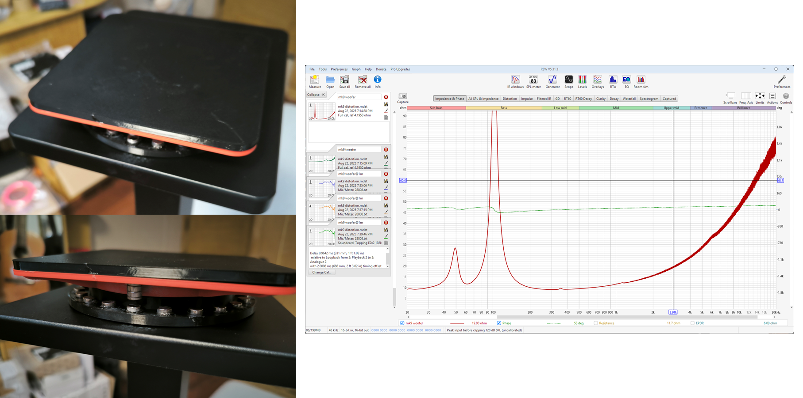 https://www.facebook.com/groups/791461357947350/permalink/1902911593468982/
- วัด impedance (ด้วย Audio Interface และ REW)
- เตรียมสายวัด (อ่านเพิ่มเติมได้ที่ลิงค์ในคอมเมนต์)
- เสียบสายเข้า audio interface และ ลำโพง
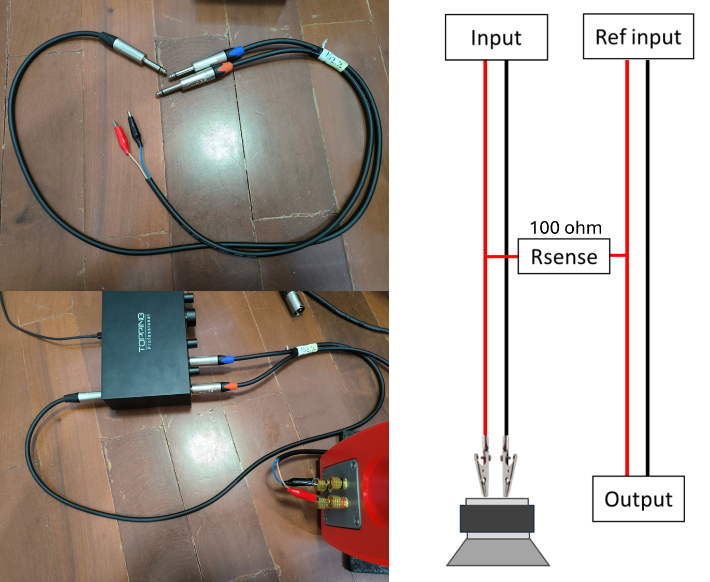
https://www.facebook.com/groups/791461357947350/permalink/1902911593468982/
- วัด impedance (ด้วย Audio Interface และ REW)
- เลือก Type ให้เป็น Impedance
- ถ้าวัดครั้งแรกจะต้องทำ Calibration ก่อน
- สำหรับวัด impedance ผมแนะนำให้เปิด level ให้ดังที่สุด หรือ 0dBFS
- กด Start
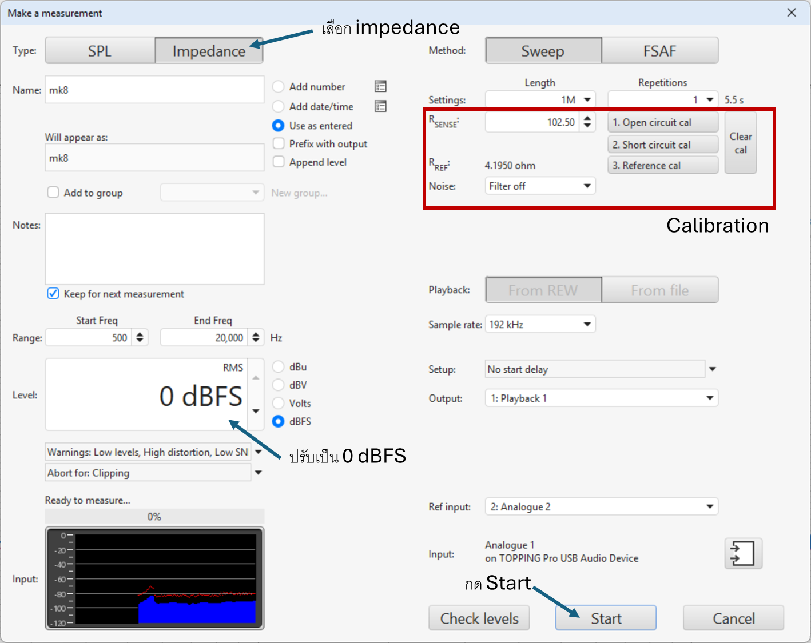
- วัด impedance (ด้วย Audio Interface และ REW)
ภาพนี้เป็นผลการวัด ซึ่งอันนี้ผมยอมรับว่า calibrate มาไม่ดีเท่าไหร่ เพราะว่าเดี๋ยวผมจะไปใช้ DATS v3 แทน
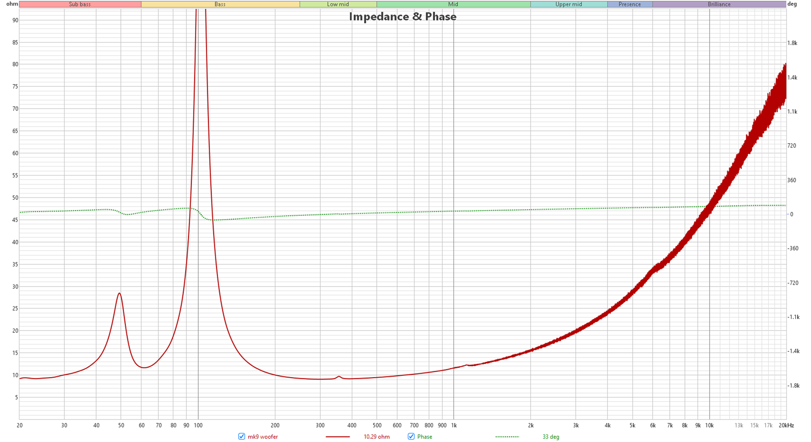
- วัดด้วย DATS
อันนี้ผมเชื่อว่าถ้าใครมี DATS อยู่แล้วก็คงจะทำกันเป็น
ส่วนใครยังไม่มีผมแนะนำให้หามาใช้ ไม่ว่าจะซื้อมือ 2 หรือจะยื้มเพื่อน
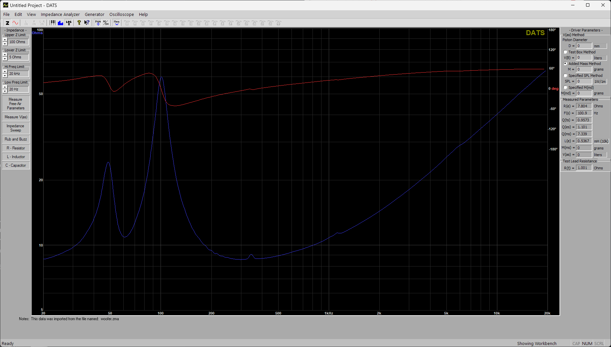
- export file .zma หรือ .txt
เมื่อวัดค่าเรียบร้อยแล้วก็ export ไฟล์ออกมาให้เรียบร้อย
REW: เลือกเมนู File > Export > Export measurement as text แล้วเลือก OK DATS: เลือกเมนู File > Export Impedance Data > DATS Formatted .txt or .zma
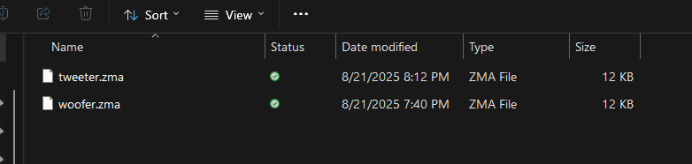
วิธีการวัดลำโพงสำหรับทำ crossover EP 2
ขั้นตอนนี้ รวม วิธีการตั้งตำแหน่งไมค์ การวัด On-axis และ Off-axis Frequency Response การจำกัด IR (Impulse Response) Window การวัดเพื่อทำ Alignment ระหว่าง Woofer กับ Tweeter
- การตั้งไมค์เพื่อวัดลำโพง
- อันดับแรกไมค์ จะต้องหางจากลำโพงอย่างน้อย 3 เท่าของด้านที่ยาวที่สุดของหน้าลำโพง
- ตัวอย่างหน้าลำโพงของผมสูง 17.4 ซม. ดังนั้นผมเลยตั้งไมค์ห่างจากลำโพง 60 ซม.
- แต่ถ้า
- ไมค์และลำโพงควรอยู่สูงจากพื้นพอสมควร ดีที่สุดคือสูงอยู่ระดับกลางห้อง
- ในโปรแกรม VituixCAD จะมีเครื่องคิดเลขสำหรับคำนวน Time window อยู่
- เข้าจากเมนู Tools > Auxiliary
- ใส่ระยะห่างและความสูงไมค์จากลำโพงและพื้นลงไป
- โปรแกรมจะคำนวนค่า Time window ออกมา ในตัวอย่างมีค่าเป็น 5.45 ms
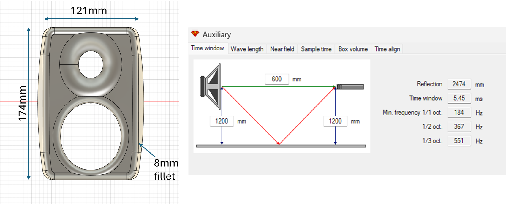
- วัด frequency response
- เลือก Type SPL
- ตั้งชื่อ xxx_hor_0
- xxx แทนชื่อลำโพงหรือชื่อที่ให้เราจำได้
- hor ย่อมาจาก horizontal หรือวัดตามแกนนอน
- 0 ตัวสุดท้ายคือองศา
- บางคนอาจจะเลือก Add number โดยเริ่มที่ 0 แล้วเพิ่มตามองศาที่จะหมุนก็ได้เช่นกัน
- Range ให้ตั้ง
- 20 - 20000 สำหรับ Woofer
- 500 - 20000 สำหรับ Tweeter
- Level ใช้ปรับความดัง ตอนทำ tweeter ไม่จำเป็นต้องเปิดดัง เปิดให้อยู่ในระดับฟังสบาย ๆ ก็พอ
- สามารถกด Check Level เพื่อดูระดับเสียงก่อนได้
- กด Start เพื่อเริ่มบันทึก (ทำตัวให้เงียบที่สุดด้วยหละ)
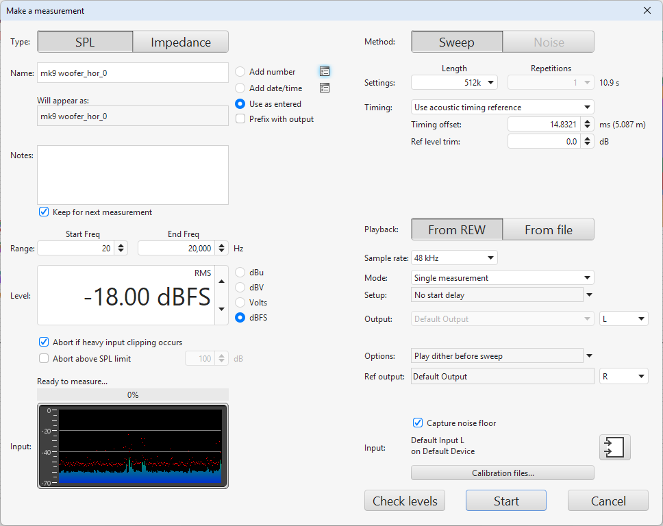
- Estimate IR delay เป็นการปรับ delay ให้ Phase อยู่ในตำแหน่งที่ถูกต้อง โดย
- กดที่ Actions ด้านขวาบน (ในเวอร์ชั่นใหม่ปุ่มนี้จะหายไป กลายเป็นคลิกขวาแทน)
- เลือก Estimate IR delay
- เลือก Shift and update timing offset
- ในขั้นตอนนี้เฟสจะถูกปรับให้อยู่ในตำแหน่งที่ถูกต้อง และจะตั้ง offset สำหรับการวัดในครั้งต่อ ๆ ไปให้อัตโนมัติ ทำให้ไม่ต้องมากดทุกรอบ
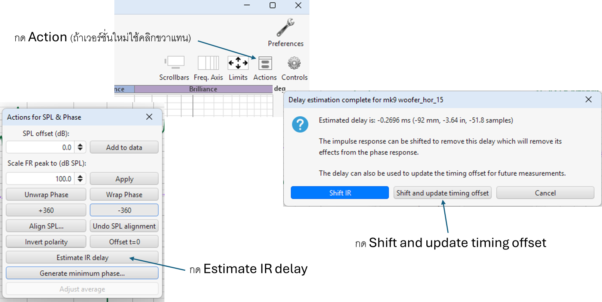
- วัด off-axis จับลำโพงหมุนไปตามองศาที่ต้องการ อย่างผมจะหมุนที่ละ 15 องศา จากนั้นก็วัดไปจนครบ 180 องศา (เมื่อก่อนผมใช้ไม้บรรทัดครึ่งวงกลมในการวัดองศาซึ่งก็เสียเวลาอยู่พอสมควร เดี๋ยวนี้มี turn table แล้วง่ายขึ้นเยอะ)
อย่าลืมเปลี่ยน “เลข” ท้ายชื่อให้ตรงกับมุมที่วัดด้วย หรือถ้าใช้ Add number ท้ายชื่อก็อย่าลืมตรวจสอบความถูกต้องด้วย

- ผลการวัด จากมุม 0 องศา ถึง 180 องศา
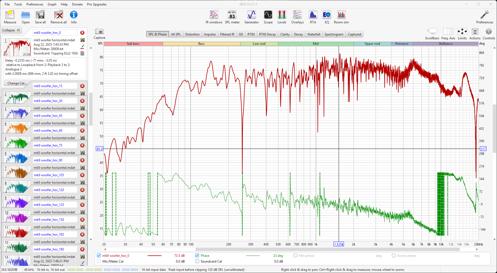
- ปรับ IR Windows
- เลือก tab Impulse
- แล้วกดที่ปุ่ม IR Windows ด้านบน
- ตั้งค่า left width เป็น 1.0
- Ref time ยังไม่ต้องสนใจ
- Right width ให้ตั้งตาม Time windows จาก VituixCAD สวนตัวผมชอบปรับให้น้อยกว่าเล็กน้อย
- กด Apply to all, keep ref time
จะสังเกตเห็นว่า กรอบ window (สีน้ำเงิน) จะบีบเข้ามาจน impulse จาก first reflection จะอยู่นอกกรอบนี้พอดี 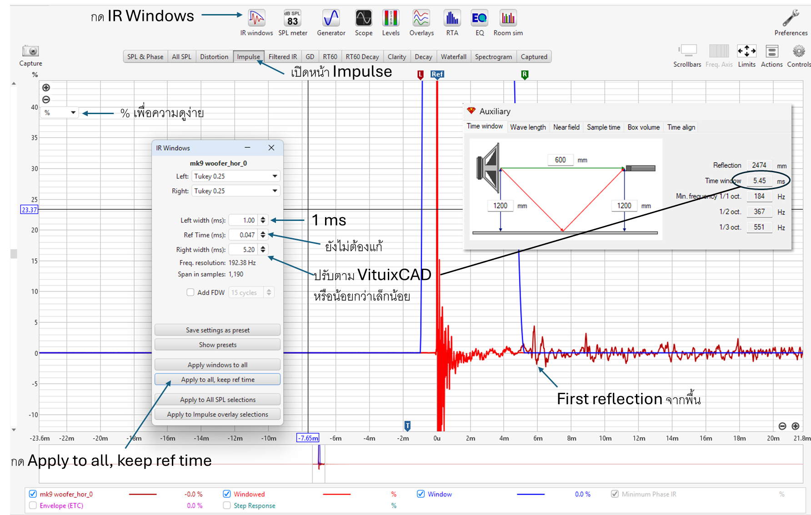
- far field frequency response
ผลที่ได้จากการปรับ IR Window ก็คือกราฟ SPL จะเรียบขึ้น เพราะจะตัดคลื่นที่สะท้อนมาจากห้องออกไปหมด แต่กราฟเบสก็จะหายไปบางส่วนด้วย ซึ่งไม่เป็นไร เราจะไปซ่อมทีหลังใน VituixCAD
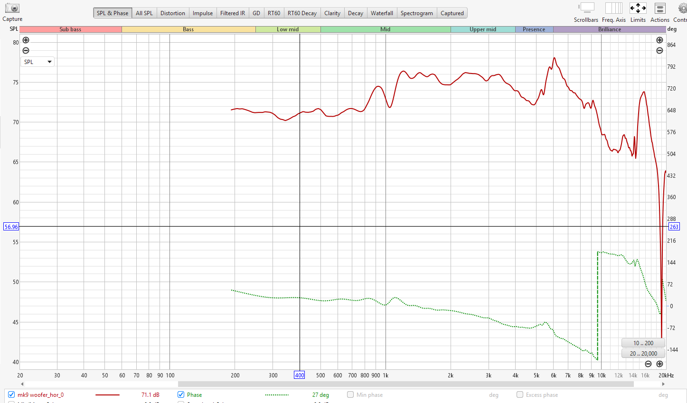
-
แก้ Ref time ในกรณีอาจจะเจอกราฟ impulse บางอันที่ Ref อยู่ในตำแหน่งที่ไม่ถูกต้อง สามารถแก้ได้ด้วยการลากป้าย Ref สี่น้ำเงินด้านบนมาในต่ำแหน่งที่ถูกต้อง 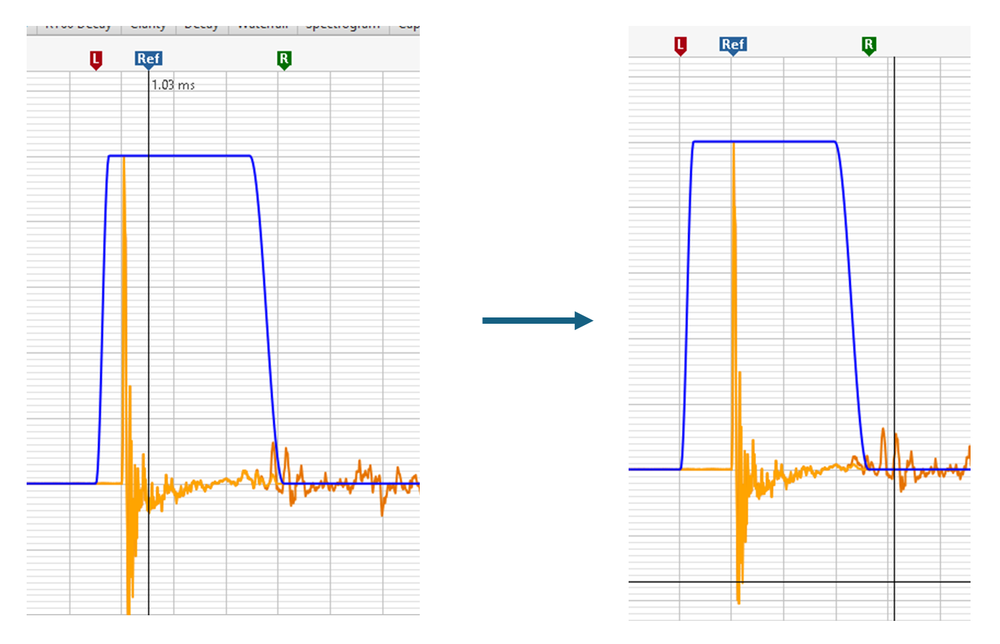
-
ปรับระดับ SPL ให้อยู่ในระดับเดียวกัน
- เนื่องจากเวลาเราหมุนลำโพง ตำแหน่งดอกลำโพงจะมีเปลี่ยนแปลงไป ทำให้ระยะหางจากดอกลำโพงถึงไมค์เปลี่ยนไป ระดับความดังก็จะเปลี่ยนไปด้วย ในทางทฤษณีเราสามารถปรับแก้ได้ด้วยการปรับความดังของกราฟทุกกราฟให้เบสมีความดังเท่ากันไปเลย เพราะเบสความถี่ต่ำ ๆ ที่มีความยาวคลื่นมากมันจะอ้อมไปด้านหลังลำโพงที่มีความกว้างน้อยกว่าความยาวคลื่นมากได้โดยไม่เสียกำลังไป
- ขั้นตอนนี้อาจจะไม่จำเป็น ถ้าคนออกแบบจะใช้จุดหมุนของตู้ลำโพงเป็นจุดอ้างอิง ก็สามารถข้ามขั้นตอนนี้ไปได้
วิธีทำ
- ที่ Tab ALL SPL กดไปที่ปุ่ม Action (หรือคลิกขวาสำหรับเวอร์ชั่นใหม่)
- กดไปที่ Measurement Action
- ที่ Measurement Action เลือกกราฟมุมที่ต้องการปรับ
- ค่อยเพิ่ม SPL offset ขึ้นจนปลายด้านซ้ายทับกัน
- เมื่อได้ตำแหน่งที่ถูกต้องแล้วให้กดปุ่ม Add offset to data
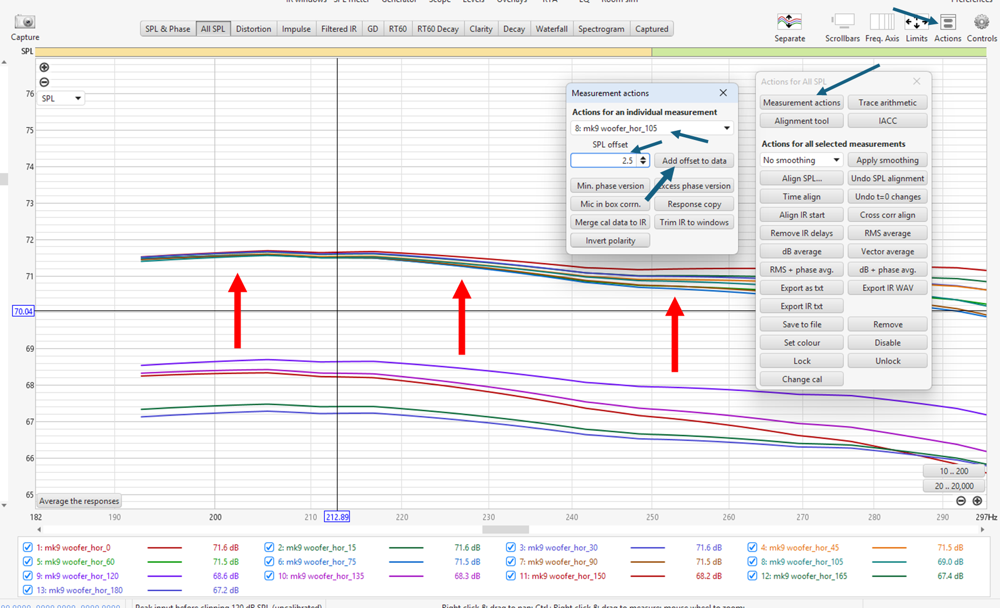
-
ตรวจตอบอีกครั้งเพื่อความเรียบร้อย Horizontal FR 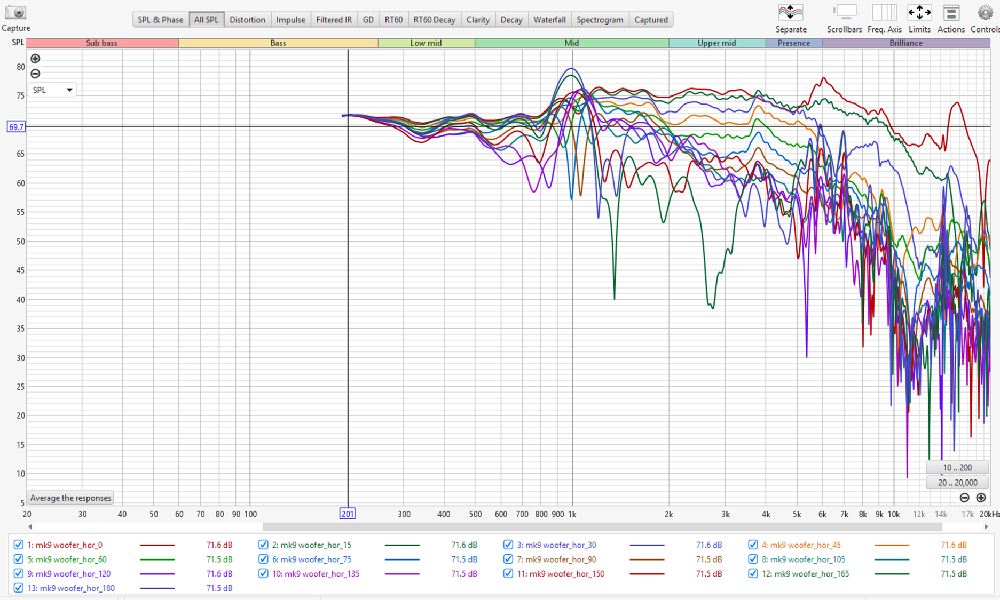
-
Export .FRD
- File > Export all measurements as text
- เช็คว่าใช้ use range of measurement หรือเป็น custom range แล้วปรับค่าตาม windows เช่นในตัวอย่างเป็นค่า 200 - 20000 Hz ก็ได้เช่นกัน (สุดท้ายจะหายไปตอนรวมกราฟกับ near field อยู่ดี)
- กด OK
- เลือก folder ที่ต้องการเก็บ export file
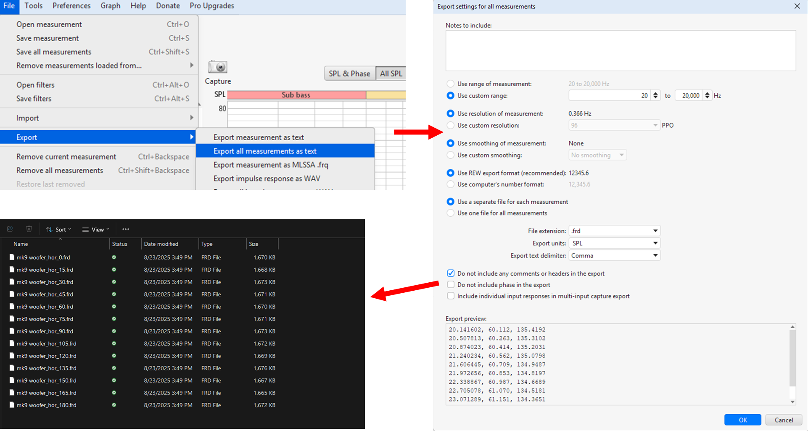
- วัดตามแนวตั้ง
- ทำซ้ำอีกรอบนึงแต่จำลำโพงนอนลงเพื่อวัด off-axis แนวตั้ง
- เปลี่ยนชื่อเป็น xxx_ver_0
- ver ย่อจาก vertical หรือตามแนวตั้ง
- มุมจะเริ่มจาก -90 ถึง 90 องศา หรือใครจะวัดจนครบ 360 องศา ก็ได้เช่นกัน
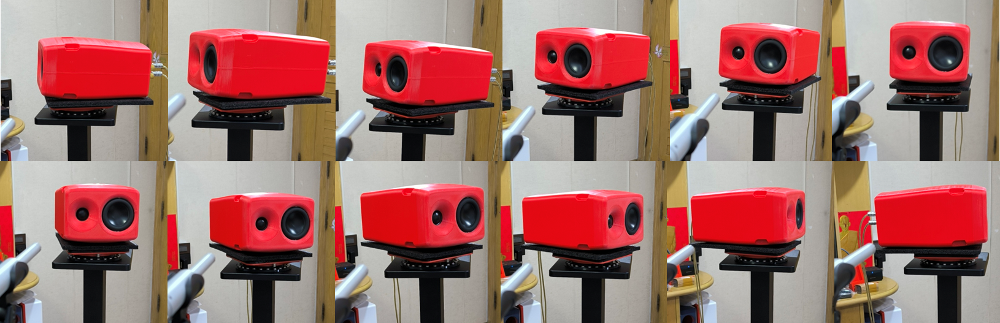
- ตรวจตอบอีกครั้งเพื่อความเรียบร้อย Vertical FR
- กราฟ xxx_ver_-90 ถึง xxx_ver_90
- กราฟ xxx_ver_0 จะซ้ำกับ xxx_hor_0 จึงไม่จำเป็นต้องใช้ (ตอน import เข้า VituixCAD จะมีฟ้องอีกที)
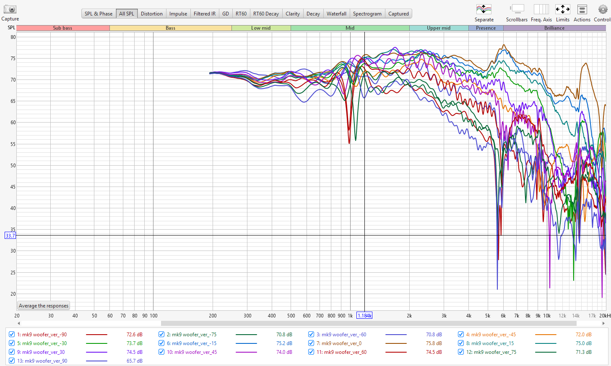
- ทำแบบนี้กับ Tweeter เช่นกัน โน้ต
- อย่าลืมตั้งชื่อแยกจาก woofer ชัดเจน
- ปรับ Sweep Range 500 - 20000 Hz
- ตอน align SPL ถ้า diffraction เยอะจนทำให้ align ยาก สามารถลด IR windows ลงมาหน่อยเพื่อให้ align ได้ง่ายขึ้นได้ แต่พอเสร็จแล้วปรับให้เท่าเดิม
- เมื่อเสร็จแล้ว export ออกมาทั้ง hor และ ver
- ตอน export อย่าลืมตรวจสอบ use range of measurement หรือ custom range 500 - 20000 Hz
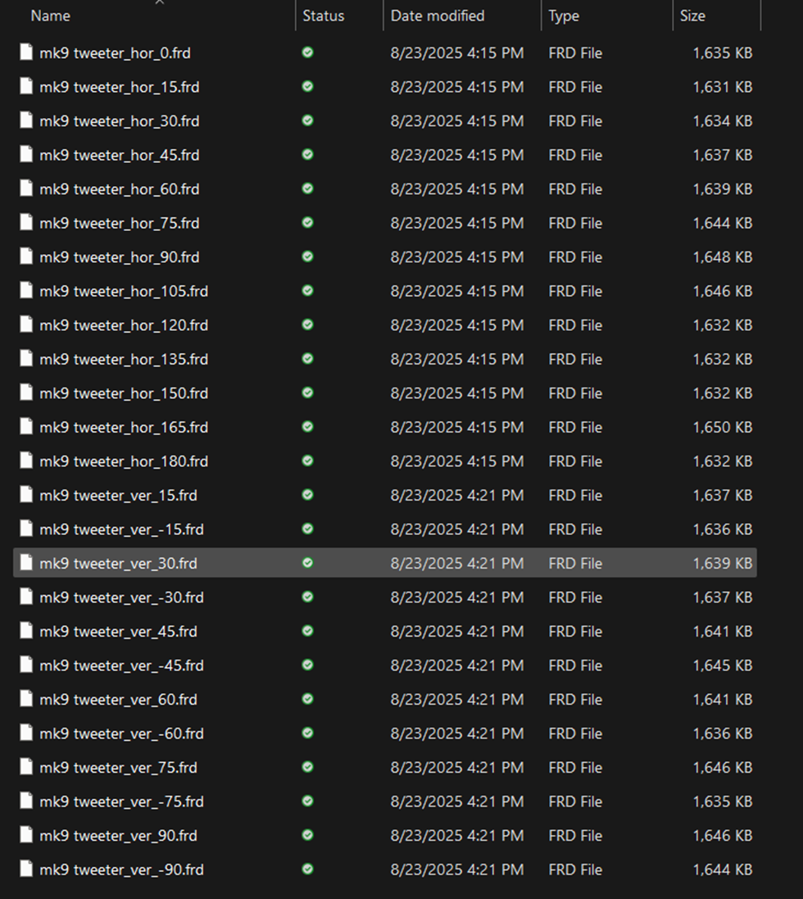
- วัด alignment Woofer กับ Tweeter (สำคัญมาก!!) ขั้นนี้จัดว่าเป็นขั้นตอนที่สำคัญที่สุดลองลงมาจากวัด On-axis FR เลยทีเดียว ในการวัดจะให้ต่อทั้ง woofer และ Tweeter พร้อมกัน แล้ววัด สิ่งสำคัญคือ
- ตำแหน่งของลำโพงจะต้องอยู่ที่เดิม
- อาจจะวัดให้เรียบร้อยก่อนที่จะวัด vertical off-axis
- หรือ ถ้าไม่มี turn table ให้วัด on-axis ทั้ง woofer tweeter และ alignment ไว้ต่างหากเลยก็ได้
- ความดังของ woofer และ tweeter จะต้องไม่ต่างกันเกินไป ถ้าต่างกันมากให้ใช้วิธีแก้ในขั้นตอนถัดไป
- ความดังของ woofer และ tweeter ต่างกันมากเกินไปหรือไม่ให้ดูจากกราฟ Alignment ถ้าไม่ต่างจาก tweeter เลย และ เสีย tweeter ก็ดังกว่า Woofer เกิน 12 dB
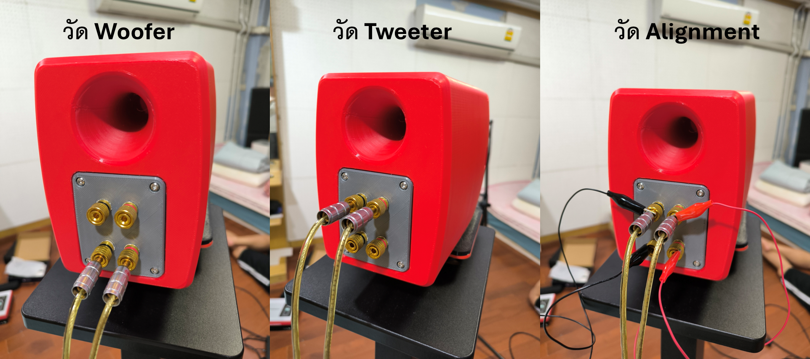
- วัด alignment Woofer กับ Tweeter กรณี Tweeter ดังกว่า woofer มาก ในกรณีที่ tweeter ดังกว่า woofer มาก (ของผม 16 dB) ให้ต่อ ตัวต้านทานลดความดัง tweeter ลงมาหน่อย ตัวอย่างผมต่อตัวต้านทาง 4 โอมอนุกรมเข้ากับ tweeter เพื่อให้ระดับเสียงลดลงก่อนวัด
ยาวพอสมควรแล้วผมขอจบตอนลงตรงนี้ก่อน แต่อย่าเพิ่งเก็บไมค์นะครับ เพราะเราจะต้องวัด Near field ต่อซึ่งผมจะบอกวิธีในตอนต่อไป
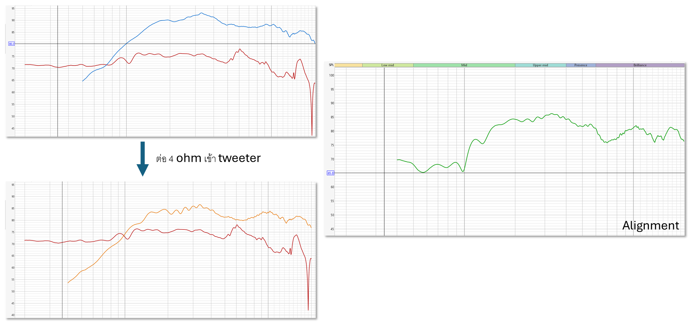
- export ไฟล์ Alignment
ถ้าใครใช้ turn table แล้วสามารถวัดโดยไม่ย้ายลำโพงได้ก็สามารถใช้ FR จาก woofer กับ tweeter ได้เลย หรือถ้าทำไม่ได้และมีการย้ายลำโพง ก็อย่าลืม export woofer กับ tweeter ใหม่นี้ออกมาด้วย แล้วถ้าใครต้องทำปรับความดังของ tweeter ก็อย่าลืม export ออกมาเพิ่อเอามาตรวจสอบความถูกต้องด้วย
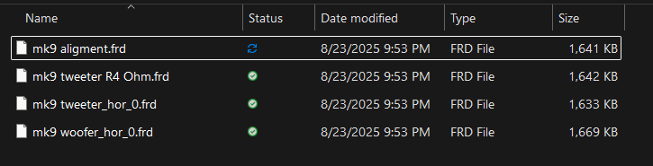
วิธีการวัดลำโพงสำหรับทำ crossover EP 3
ตอนนี้จะเกียวกับการ วัด Near Field และการรวมกราฟ Far Field และ Near Field เข้าด้วยกัน
ต้อนนี้มีความน่าตื่นเต้นอย่างหนึ่งคือผมเชื่อว่าไม่น่าจะมีใครเคยสอนวิธีนี้มาก่อน แม้ในต่างประเทศก็น่าจะมีน้อยมาก ต้องเป็นคนที่ใช้ VituixCAD เยอะแล้วอ่านวิธีใช้ของมันจริง ๆ ถึงจะรู้
- วิธีวัด near field
วิธีตั้งไมค์
- woofer
- ตั้งไมค์ให้กลางและใกล้ผิว woofer มากที่สุด ระยะควรไม่เกิน 5 mm ถ้า woofer มี duct cap ก็ตั่งให้กลาง duct cap แต่ถ้าเป็น phase plug จะต้องวัดเอียง ๆ ที่ขอบ phase plug แทน
- port
- ถ้าพอร์ตตรง ๆ ธรรมดาไม่มี flare หรือ flare น้อย ๆ ให้ตั้งปากไมค์ไว้เสมอกับปากพอร์ต หรือกินเข้าไปเล็กน้อย ~1-2 mm ส่วนพอร์ต flare กว้าง ๆ ให้หาระยะความกว้างเฉลี่ยของปาก flare ส่วนแคบและส่วนกว้าง แล้ววางไมค์ในตำแหน่งนั้น ตัวอย่าเช่น พอร์ตของลำโพงในภาพมี flare พอสมควร เวลาตั้งไมค์ก็ต้องยื่นเข้าไปเล็กน้อย
ความดังของที่บันทึก
- เนื่องจากไมค์อยู่ใกล้แหล่งกำเนิดเสียงมาก ๆ ทำให้ต้องปรับความดังลง ปกติผมจะเริ่มปรับลดความดังลงจากที่วัด Far Field ลงไปซัก -30 dB ก่อน
- จากนั้นปรับให้เบาที่สุดที่ยังบันทึงเข้าโปรแกรมแล้วยังชัดอยู่ (70-90 dB)
- ความดังนั้นไม่จำเป็นต้องสัมพันธุ์กับ Far Field เพราะเดี๋ยวจะไปแก้ใน VituixCAD อยู่ดี
- เมื่อปรับเสียเพื่อวัด Woofer แล้ว ตอนวัดพอร์ต จะต้อง “ไม่ปรับ” ความดังอีก ง่าย ๆ คือ ปรับความดังครั้งเดียวแล้ววัด Woofer ทุกดอก พอร์ตทุกพอร์ต ไม่แตะ volume control อีกเลย
- ถ้ามีดอกหลายดอก พอร์ตหลายพอร์ต ก็วัดมาให้ครบทุกจุด
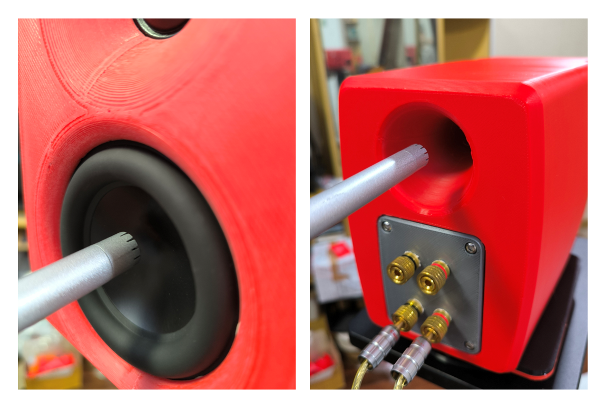
- ผลการวัด near field
เมื่อวัดเสร็จแล้ว
- อย่างแรก ผม “ไม่แนะนำ” ให้ทำ estimate IR delay ของทั้ง 2 กราฟ ถ้ายังไม่เข้าใจเรื่อง phase กับ delay ผมแนะนำว่าข้ามส่วนของการปรับ phase ไปเลย
- กราฟนี้สามารถบอกคุณภาพของลำโพงและพอร์ตได้ระดับนึงเลย
- ดูที่พอร์ต จะเห็น port noise ที่ 1k Hz นิด ๆ ชัดเจนซึ่งก็เป็นปกติของพอร์ตยาว ๆ ยังไม่ได้ damping ใด ๆ เพิ่มด้วย แต่ก็เป็นตามที่ออกแบบไว้เพราะพอร์ตอยู่ด้านหลังทำให้ไม่มีผลต่อการพังเสียโดยรวมเท่าไหร่ (ถ้ามีก็เอา absorber ไปตั้งหลังลำโพงก็จบเช่นกัน)
- อันนี้เห็นแล้วต้องอวยหน่อย Dayton รุ่นใหม่ ๆ นี่ไม่ผิดหวังเลย ND-91 nearfield เรียบมาก เสียงอย่างเดียวหน้ามีเนียม decay ที่ 1000 Hz มันช้าไปหน่อย
- ใครที่อยากดู Group Delay ของ woofer และพอร์ต ก็สามารถดูได้เช่นกันที่ tab GD
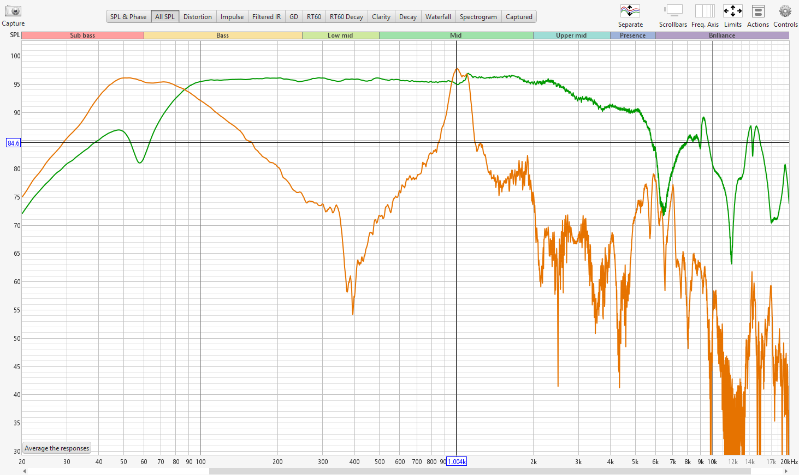 3. Export file ให้เรียบร้อย ทวนวิธี export frequency response ใน REW อีกที
- เลือกเมนู File > Export > Export all measurements as text
- เลือก use range of measurement แล้วกด OK
- เลือก folder ที่ต้องการเก็บ export file 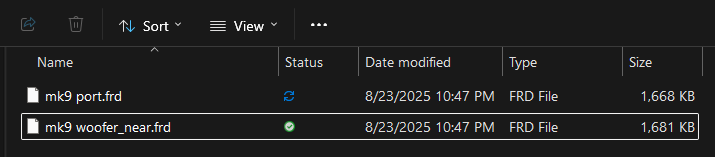
- รวม Far field and Near field ถ้าใครสนใจอยากฟังต้นฉบับผมแนะนำให้ฟังคลิป Youtube ที่ชื่อว่า “20-20kHz Free Field Measurements Without an Anechoic Chamber” อันนี้เป็น Original ของวิธีวัดนี้เลยก็ว่าได้ เพราะคนพูดคือ “Steve Temme” เป็นหนึ่งในคนที่วิจัยคิดวิธีนี้ขึ้นมา! เสียอย่างเดียวคือไม่มี sub ภาษาไทย : P
คลิปใน คอมเม็นต์ 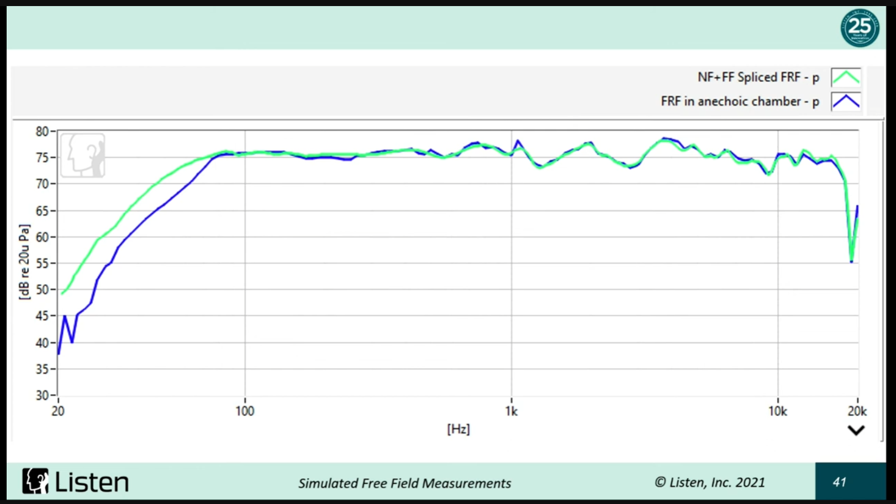 https://youtu.be/rEEe0we1Mrs
- VituixCAD Diffraction simulation เรามาเริ่มทำข้อมูล baffle step และ diffraction ก่อน
ความสำคัญ
- เนื่องจากเวลาวัด near field เราเอาตัวแปรที่เกิดจากรูปร่างของลำโพงออกไปทั้งหมด เราจึงต้องทำการ simulate ลักษณะของหน้าลำโพงเพื่อเอา baffle step และ diffraction กลับมาด้วย
วิธีทำ
- เปิดเมนู Tools > Diffraction 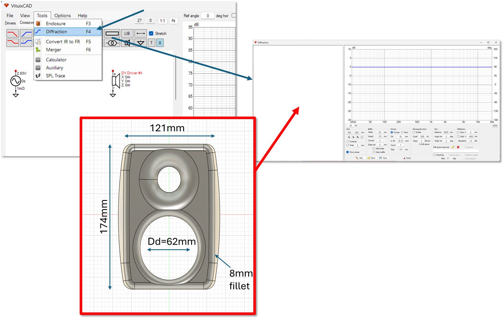
- เริ่ม “วาด” หน้าลำโพง
- ใส่ขนาดหน้าลำโพง (baffle)
- Width ความกว้าง สังเกตว่าหน่วยเป็น มิลเมตร (mm)
- Height ความสูง
- Conners จำนวนมุม อย่างลำโพง 4 เหลียม ก็นับเป็น 4 มุม (เดี๋ยวมีตัวอย่างเพิ่มเติม)
- Edge rad. มุมความมนของดอกลำโพง ในตัวอย่างของผมที่ออกแบบไว้คือ 8 มม. เป็นต้น บางคนอาจจะใช้ ดอกเร้าเตอร์ (router bit) เก็บมุมลำโพง ก็เอารัศมีของดอกมาใช้ได้เลย
- ใส่ขนาดลำโพง (Drivers)
- ถ้าลำโพงเป็น 4 เหลี่ยมให้เลือกที่ Rect. แต่ถ้าเป็นวงกลมปกติใช้ Circle
- เลือกใส่ Dd หรือ Sd ซึ่งค่านี้เอามาจาก T/S parameter จากโรงงานหรือจะวัดเองก็ได้
- กรณีวัดเองใช้ ระยะจากจุดกลึ่งกลางของขอบลำโพง (surround) จางด้านหนึ่งไปด้านหนึ่ง
- Count จำนวนดอกลำโพง woofer
- Axis - Distance
- ค่านี้โปรแกรม VituixCAD แนะนำให้ใส่ค่า 5000 - 30000 mm (5 - 30 เมตร)
- อีกค่าหนึ่งที่ใส่ได้คือระยะห่างที่วัดจริง อันนี้ต้องลองด้วยตัวเองว่าค่าไหนดีกว่ากัน
เมื่อใส่ค่าครบแล้วให้กดปุ่ม New โปรแกรมจะแสดง
- รูปเบื้องต้นของหน้าลำโพงขึ้นมา
- เราสามารถคลิกซ้ายค้างแล้วลากมุมลำโพง ดอกลำโพง และ ตำแหน่งไมค์ได้
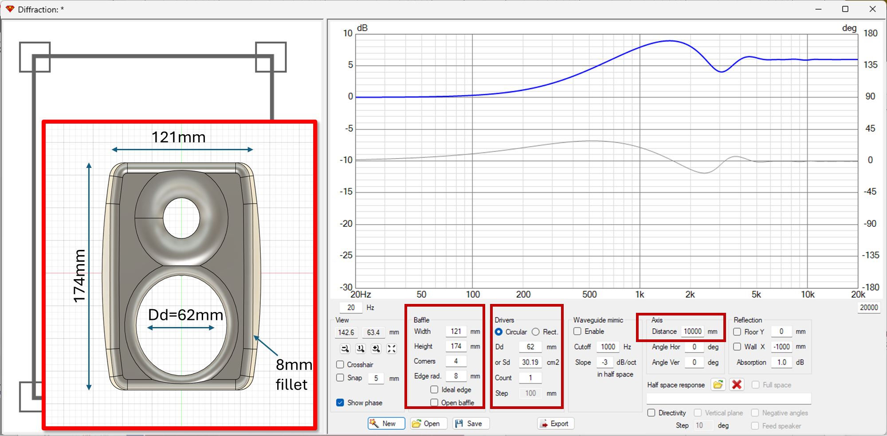
- ตัวอย่างหน้าลำโพงแบบอื่น ๆ
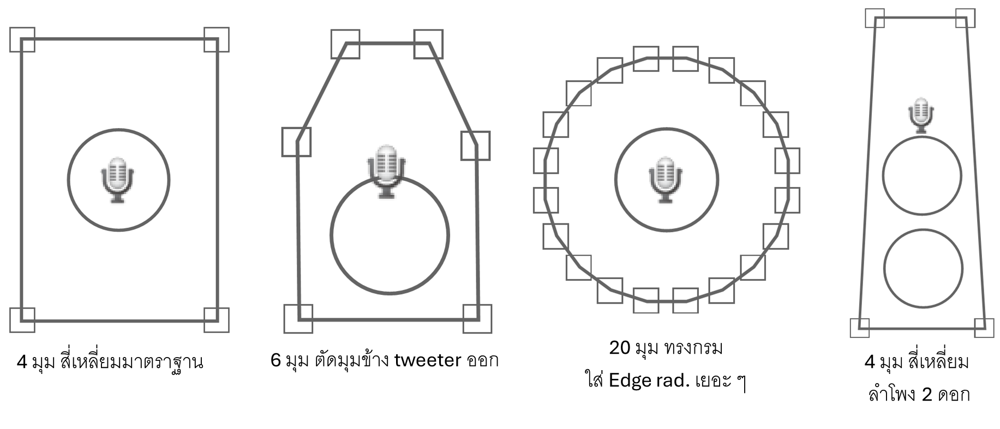
- Simulate the first baffle step and diffraction
- หลังจากจัดวางหน้าลำโพงและตำแหน่งไมค์ให้เหมือนตอนวัดจริงที่สุดแล้ว โปรแกรมจะสร้าง filter ของ baffle step and diffraction ขึ้นมา
- กดปุ่ม export เพื่อสร้างไฟล์ .frd สำหรับนำไปใช้ในขั้นตอนต่อไป
- เมื่อเรียบร้อยแล้ว ก็กดปิดหน้าต่าง Diffraction ได้เลย หรือจะ Save เพื่อลำมาแก้ที่หลังก็ได้
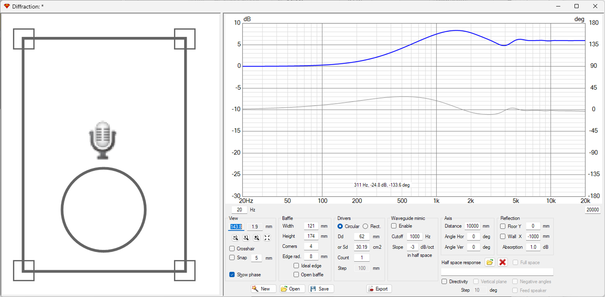
- VituixCAD Merger
ต่อไปก็ถึงเวลาจับ Far Field และ Near Field มารวมกันเสียที
- เปิดเมนู Tools > Merger
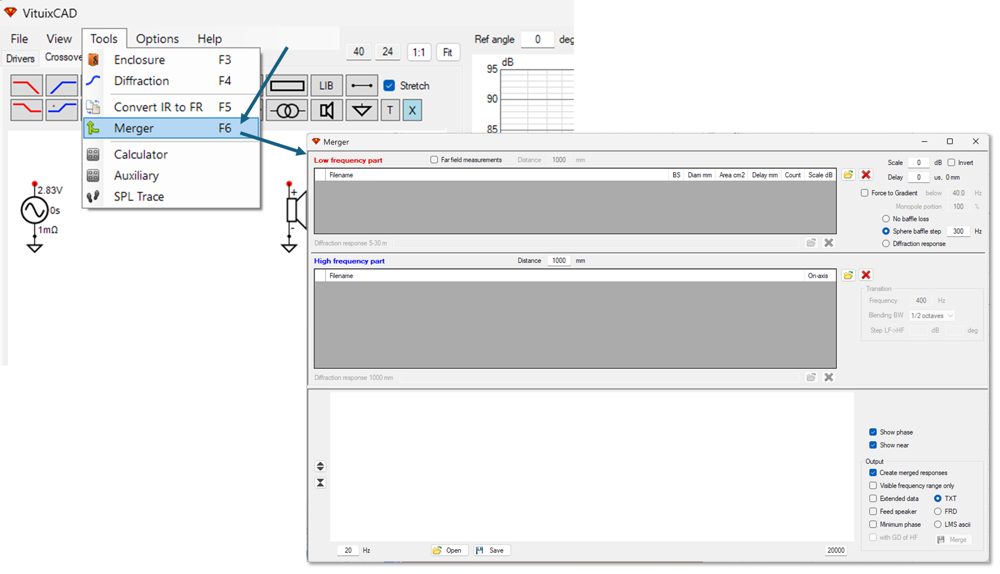
- ใส่ค่า Near Field ในส่วน Low frequency part
- กดที่ปุ่ม folder ด้านขวาบน เลือกไฟล์ near field port และ woofer ที่เตรียมไว้
- เลือก Diffraction response
- กดที่ปุ่ม folder สำหรับใส่ Diffraction response ใส่ไฟล์ .frd ที่ได้จากขั้นตอนที่ 7 ลงไป 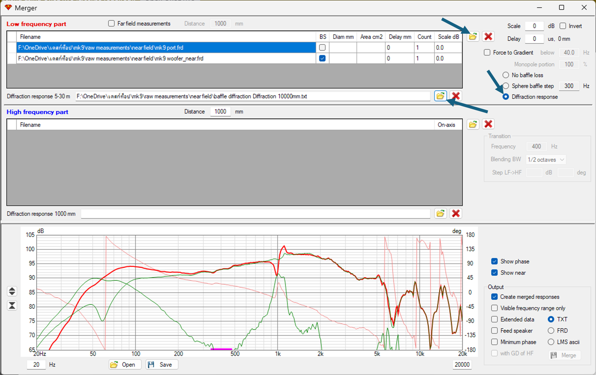
- ปรับระดับความดังและ phase ของดอกลำโพงและพอร์ต
- BS (Baffle Step) บอกโปรแกรมว่า กราฟไหนจะโดนผลจาก baffle step และ diffraction บ้าง หลัก ๆ ก็คืออะไรก็ตามที่อยู่หน้าลำโพง ให้ติ๊กถูกทั้งหมด อย่างเช่น
- ดอกลำโพงปกติอยู่หน้าลำโพงอยู่แล้วให้ติ๊กถูก
- ถ้าดอกลำโพงอยู่ด้านข้าง ไม่ต้องติ๊ก
- ถ้าพอร์ตอยู่ด้านหน้าลำโพงให้ติ๊กถูก
- ถ้าพอร๊ตอยู่ด้านหลังลำโพงไม่ต้องติ๊กถูก
- Diam และ Area
- เลือกใส่อย่างใดอย่างหนึ่ง
- ถ้าเป็นดอกลำโพง ให้ใส่ Dd หรือ Sd ลงไป
- ถ้าเป็นพอร์ตให้ใส่ความกว้างปากพอร์ตตำแหน่งที่วัด 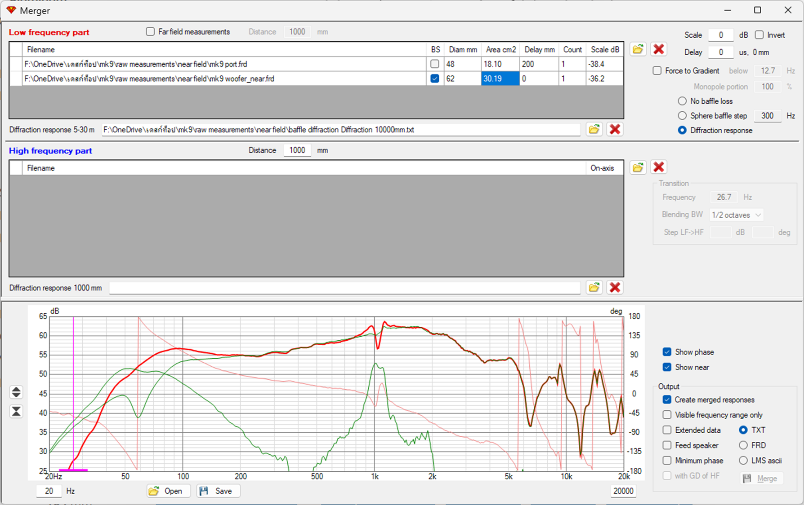
- ใส่ High frequency part
- กดที่ปุ่ม folder ด้านขวาบนของส่วน High frequency part ใส่ far field measurement ของ woofer ทั้งหมดลงไป
- เช็คไฟล์ที่วัด on-axis หรือ 0 องศา (xxx_hor_0.frd) มีติ๊กถูกที่ On-axis
- ช่อง Diffraction response อย่าเพิ่งทำอะไรกับมันในขั้นตอนก่อนทำ Crossover เพราะจะทำให้กราฟตอนเอามารวมกับ tweeter เพี้ยนไป
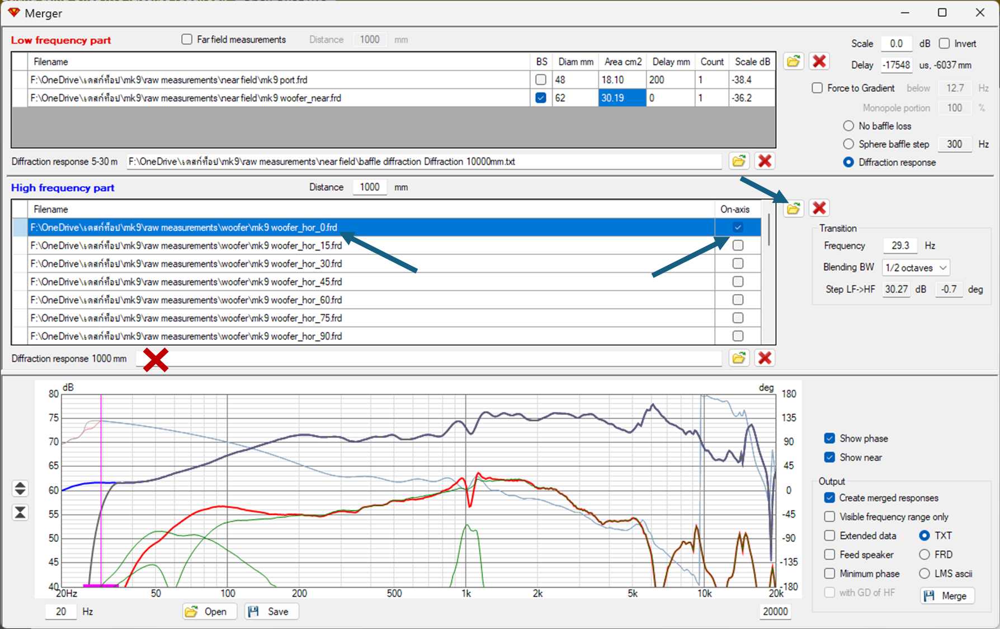
- ปรับ Scale ของ Low frequency part และ ปรับ transition frequency
- ปรับ Scale ของ Low frequency part ให้กราฟในช่วง 200-400 Hz ทาบกันมากที่สุด
- คลิกซ้ายที่กราฟ เพื่อเลือกตำแหน่ง Transition หรือ ตำแหน่งที่จะเริ่มเปลี่ยนจาก Low frequency part เป็น High frequency part
- สามารถกดเลือกดูกราฟ ที่มุมอื่น ๆ ได้โดยเลือกที่ไฟล์ในตาราง High frequency part
- เลือก FRD และ กด Merge
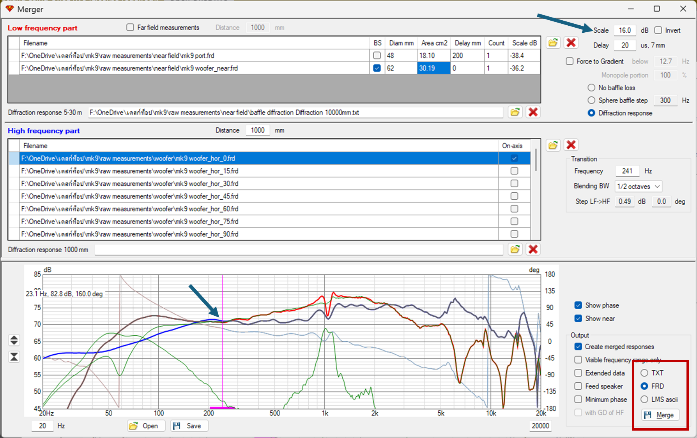
- ตรวจสอบว่าไฟล์ถูก export เรียบร้อย
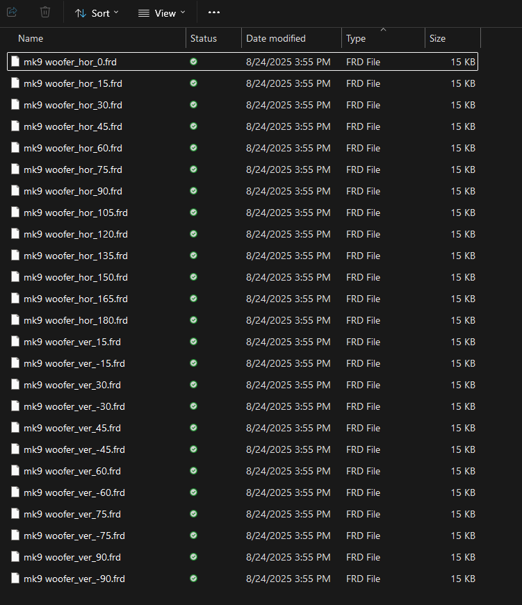 15. ทำ alignment บน VituixCAD
ในขั้นตอน ทำ alignment ผมแนะนำให้ใส่แค่ไฟล์ on-axis ก่อน (xxx_hor_0) เพราะถ้าใส่ครบจะทำให้คอมพิวเตอร์ทำงานหนักเกินไป
- เพิ่ม Driver และตั้งชื่อให้เรียบร้อย
- ใส่ Frequency Response (xxx_hor_0)
- woofer ใช้ตัวที่ merge เรียบร้อยแล้ว
- tweeter ใช้ตัวที่วัดได้เลย
- ใส่ Impedance ให้เรียบร้อย
- ลองต่อวงจรขนานดู
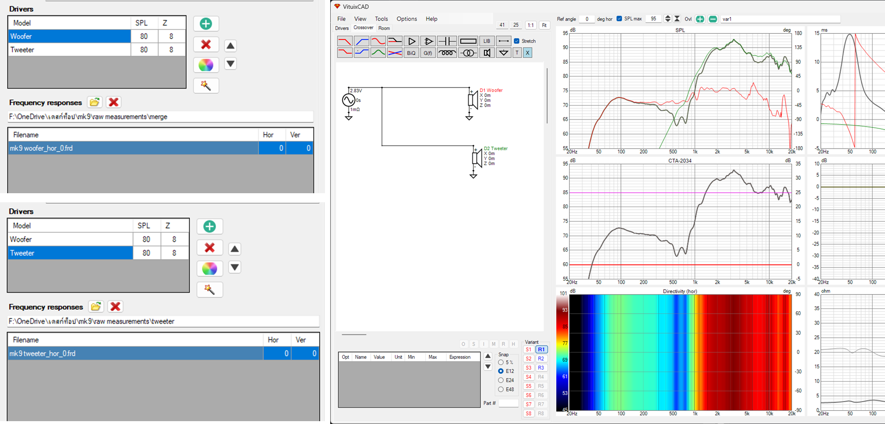
- เพิ่ม alignment overlay
- อันดับแรก ถ้าตอนวัดมีใส่วงจรเพื่อปรับความดัง ให้เพิ่มวงจรให้ตรงกันก่อน
- คลิกขวาที่ SPL หรือ CTA-2034 (ส่วนตัวผมชอบใส่ช่อง CTA-2034 มากกว่า) แล้วเลือก Open Overlay…
- เลือก ไฟล์ alignment ที่เตรียมไว้ (จาก Ep.2 หน้า 17)
- จะเห็นว่ามี overlay เพิ่มขึ้นมาที่ CTA-2034
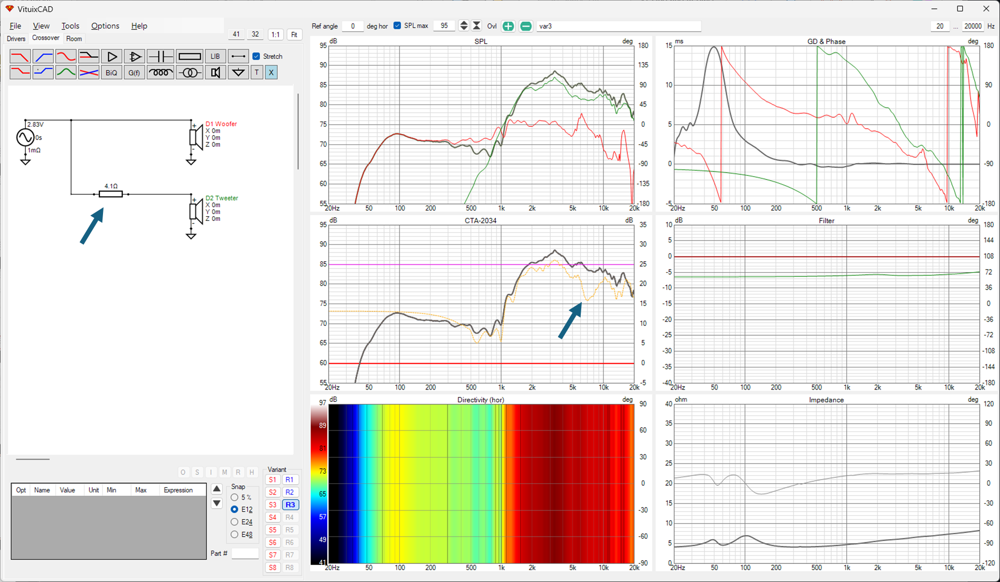
- ปรับ Delay ของ tweeter
- เลือก Tweeter
- ปรับ Delay จนกว่า CTA-2034 จะทาบลงบน alignment overlay หรือใกล้เคียงที่สุด
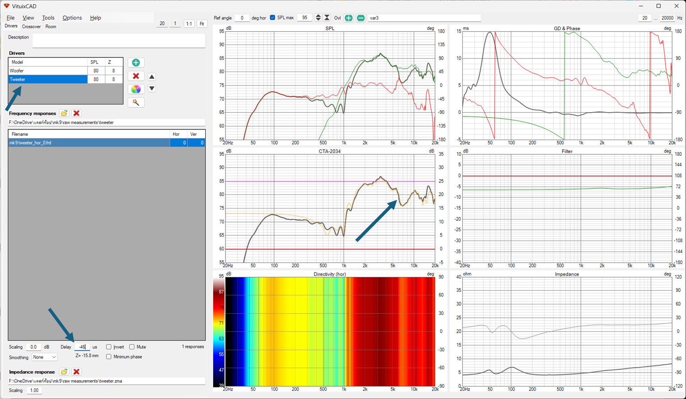
- ใส่ off-axis response ทั้งหมดแล้วเริ่มออกแบบ crossover ต่อ
เทคนิคการออกแบบ crossover
- ลำโพงที่ดีควรมีกราฟ frequency response ราบเรียบ (+- 2 db)
- phase ในช่วง crossover ใกล้เคียงกันมากที่สุด
- DI ใน CTA-2034 ควรมีค่าน้อย ๆ และค่อย ๆ เพิ่ม เรียบเป็นเส้นตรง (แต่ crossover ช่วยในส่วนนี้ไม่ค่อยได้)
- Impedance จะต้องไม่มีจุดไหนที่ต่ำกว่า 3 โอมเลย
- เช็ค Power dissipation ทุกครั้งหลังออกแบบเสร็จ (View > Power dissipation)
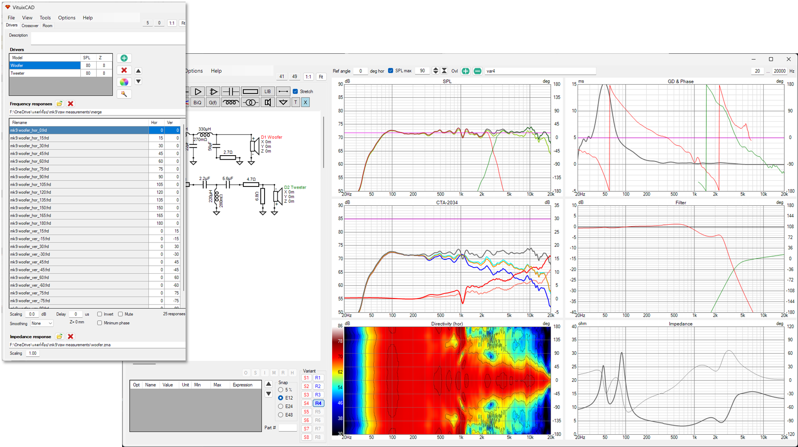